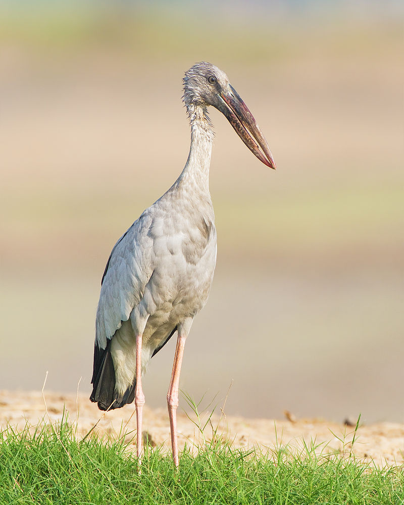
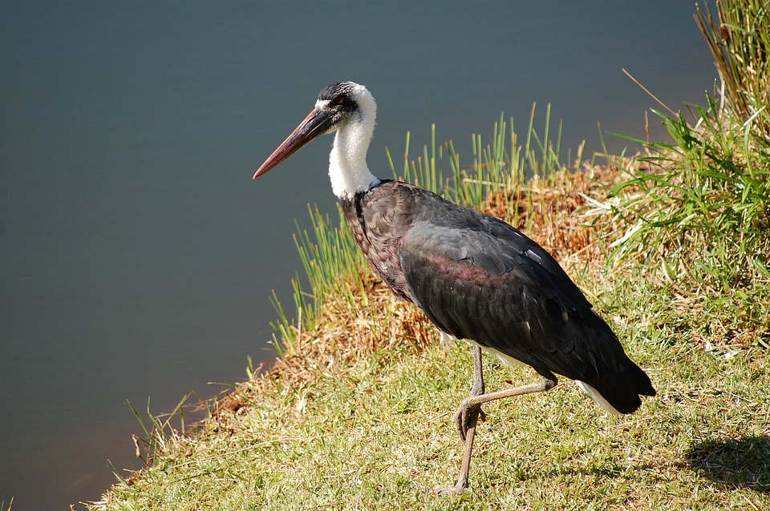
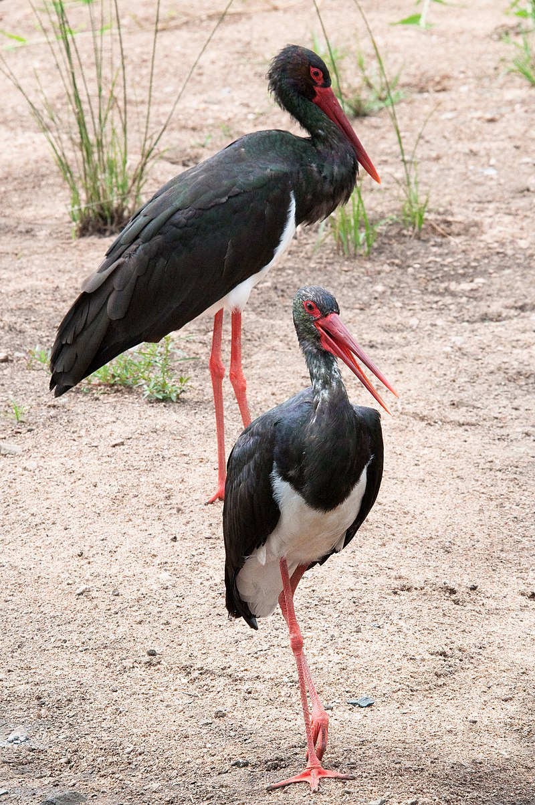
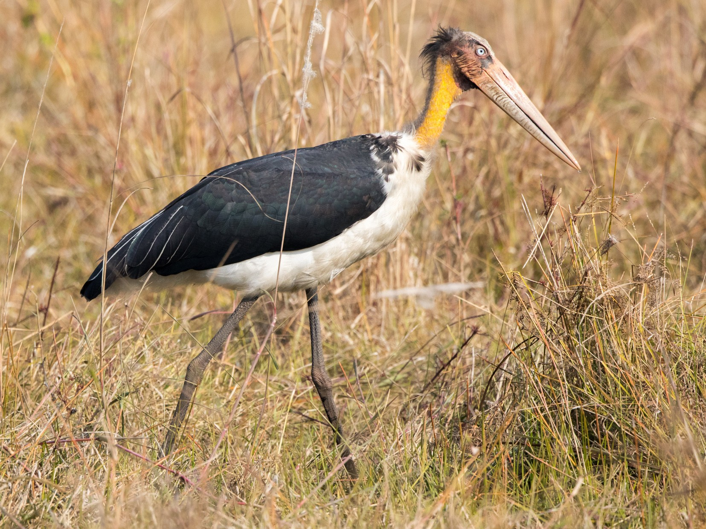
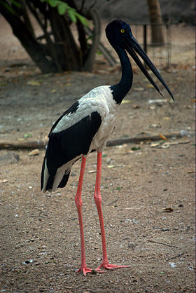

The Asian openbill or Asian openbill stork (Anastomus oscitans) is a large wading bird in the stork family Ciconiidae. This distinctive stork is found mainly in the Indian subcontinent and Southeast Asia. It is greyish or white with glossy black wings and tail and the adults have a gap between the arched upper mandible and recurved lower mandible. Young birds are born without this gap which is thought to be an adaptation that aids in the handling of snails, their main prey. Although resident within their range, they make long distance movements in response to weather and food availability.
The Asian openbill was described by the French polymath Georges-Louis Leclerc, Comte de Buffon in 1780 in his Histoire Naturelle des Oiseaux from a specimen collected in Pondichery, India. The bird was also illustrated in a hand-coloured plate engraved by François-Nicolas Martinet in the Planches Enluminées D'Histoire Naturelle which was produced under the supervision of Edme-Louis Daubenton to accompany Buffon's text. Neither the plate caption nor Buffon's description included a scientific name but in 1783 the Dutch naturalist Pieter Boddaert coined the binomial name Ardea oscitans in his catalogue of the Planches Enluminées. The Asian openbill is now placed in the genus Anastomus that was erected by the French naturalist Pierre Bonnaterre in 1791. The genus name Anastomus is from the Ancient Greek αναστομοω anastomoō meaning "to furnish with a mouth" or "with mouth wide-opened". The specific epithet oscitans is the Latin word for "yawning".
The Asian openbill stork is predominantly greyish (non-breeding season) or white (breeding season) with glossy black wings and tail that have a green or purple sheen. The name is derived from the distinctive gap formed between the recurved lower and arched upper mandible of the beak in adult birds. Young birds do not have this gap. The cutting edges of the mandible have a fine brush like structure that is thought to give them better grip on the shells of snails.[8] The tail consists of twelve feathers and the preen gland has a tuft.[9] The mantle is black and the bill is horn-grey. At a distance, they can appear somewhat like a white stork or Oriental stork. The short legs are pinkish to grey, reddish prior to breeding. Non-breeding birds have a smoky grey wings and back instead of white. Young birds are brownish-grey and have a brownish mantle. Like other storks, the Asian openbill is a broad-winged soaring bird, which relies on moving between thermals of hot air for sustained flight. They are usually found in flocks but single birds are not uncommon. Like all storks, it flies with its neck outstretched. It is relatively small for a stork and stands at 68 cm height (81 cm long).
The usual foraging habitats are inland wetlands and are only rarely seen along river banks and tidal flats. On agricultural landscapes, birds forage in crop fields, irrigation canals, and in seasonal marshes.[13] Birds may move widely in response to habitat conditions. Young birds also disperse widely after fledging. Individuals ringed at Bharatpur in India have been recovered 800 km east and a bird ringed in Thailand has been recovered 1500 km west in Bangladesh. Storks are regularly disoriented by lighthouses along the southeast coast of India on overcast nights between August and September. The species is very rare in the Sind and Punjab regions of Pakistan, but widespread and common in India, Sri Lanka, Nepal, Bangladesh, Myanmar, Thailand and Cambodia
The breeding season is after the rains, from July to September in northern India and November to March in southern India and Sri Lanka. They can skip breeding during drought years. The terns breed in herds, building a nest of sticks usually on half submerged trees (usually Barringtonia, Avicennia and Acacia), which usually lay 2-4 eggs. The nesting plants are shared with white herons, cormorants and serpents. The herds sometimes nest in very noisy areas such as inside villages. Close nesting leads to significant hustling between neighbors. Both father and mother birds alternately incubate eggs, eggs hatch after about 25 days. Males can sometimes have polygamy, usually with two females able to lay eggs in the same nest.
The woolly-necked stork or whitenecked stork (Ciconia episcopus) is a large wading bird in the stork family Ciconiidae. It breeds singly, or in small loose colonies. It is distributed in a wide variety of habitats including marshes in forests, agricultural areas, and freshwater wetlands.
The woolly-necked stork is a medium-sized stork at 75–92 cm tall. The iris is deep crimson or wine-red. The stork is glistening black overall with a black "skull cap", a downy white neck which gives it its name. The lower belly and under-tail coverts are white, standing out from the rest of the dark coloured plumage. Feathers on the fore-neck are iridescent with a coppery-purple tinge. These feathers are elongated and can be erected during displays. The tail is deeply forked and is white, usually covered by the black long under tail coverts. It has long red legs and a heavy, blackish bill, though some specimens have largely dark-red bills with only the basal one-third being black. Sexes are alike. Juvenile birds are duller versions of the adult with a feathered forehead that is sometimes streaked black-and-white. The African birds are described as having the edges of the black cap diffused or with a jagged border compared to a sharp and clean border in the Asian birds. Sexes are identical, though males are thought to be larger. When the wings are opened either during displays or for flight, a narrow band of very bright unfeathered skin is visible along the underside of the forearm. This band has been variously described as being "neon, orange-red", "like a red-gold jewel", and "almost glowing" when seen at close range.Small nestlings are pale grey with buffy down on the neck, and a black crown. At fledging age, the immature bird is identical to the adult except for a feathered forehead, much lesser iridescence on feathers, and much longer and fluffier feathers on the neck.English common names for this species include Whitenecked Stork, Whiteheaded Stork, Bishop Stork, and the Parson-bird. More recently, the African and Asian populations are considered to be two different species, the African and the Asian Woolly-neck. This is based purely on geographical isolation,[15] but there is no morphological or phylogenetic evidence yet to support this split.
It is a widespread tropical species which breeds in Asia, from India to Indonesia, and throughout Africa. It is a resident breeder building nests on trees located on agricultural fields or wetlands, on natural cliffs, and on cell phone towers. They use a variety of freshwater wetlands including seasonal and perennial reservoirs and marshes, crop lands, irrigation canals and rivers. They are attracted to fires in grasslands and crop fields where they capture insects trying to escape the fire.[10] They use ponds and marshes inside forests in both Africa and Asia, especially in south-east Asia where they use grassy and marshy areas in clearings in evergreen rainforests. In India, they are an uncommon species in coastal habitats. They use coastal areas in Africa also, with birds in Sulawasi observed to be eating sea snakes, and birds on the Kenya coast foraging in coral reefs and mudflats. In an agricultural landscape in north India, woolly-necked storks preferred fallow fields during the summer and monsoon seasons, and natural freshwater wetlands during the winter. Here, irrigation canals were preferentially used during winters when water levels were low, and birds avoided crop fields in all seasons. Assisted by construction of new irrigation canals, this species is spreading to arid areas like the Thar Desert in Rajasthan, India. Individuals of this species have been sighted at altitudes of 3,790 m above sea level in China (Napahai wetland), and 3,540 m above sea level in Nepal (Annapurna Conservation Area).
Its main food is fish and the breeding season starts from October to November.
The black stork is a large amphibian species in the Cranes family. It is a widespread species, but rarely breeds in warm areas of Europe, mainly in the central and eastern regions. This is a shy and alert species, unlike the white crane. This species often pairs or small groups in swamp, river, inland waters. Black cranes eat amphibians and insects.
The black stork is a large bird, measuring between 95 and 100 cm (37 and 39 in) in length with a 145-to-155 cm (57-to-61 in) wingspan, and weighing around 3 kg (6.6 lb). Standing as tall as 102 cm (40 in), it has long red legs, a long neck and a long, straight, pointed red beak. It bears some resemblance to Abdim's stork (C. abdimii), which can be distinguished by its much smaller build, predominantly green bill, legs and feet, and white rump and lower back. The plumage is black with a purplish green sheen, except for the white lower breast, belly, armpits, axillaries and undertail coverts. The breast feathers are long and shaggy, forming a ruff which is used in some courtship displays. The black stork has brown irises, and bare red skin around its eyes. The sexes are identical in appearance, except that males are larger than females on average. Moulting takes place in spring, with the iridescent sheen brighter in new plumage. It walks slowly and steadily on the ground and like all storks, it flies with its neck outstretched.The juvenile resembles the adult in plumage, but the areas corresponding to the adult black feathers are browner and less glossy. The scapulars, wing and upper tail coverts have pale tips. The legs, bill and bare skin around the eyes are greyish green. It could possibly be confused with the juvenile yellow-billed stork, but the latter has paler wings and mantle, a longer bill and white under the wings.
During the summer, black cranes are found from west East Asia (Siberia and China) to Central Europe, as far as northern Estonia, Poland, Niedersachsen and Bayern in Germany, Czech Republic, Hungary, and southern Greece. Greece, with a small amount in Spain and Portugal. Their numbers are not much in the western region of species distribution, but more densely populated than the eastern region of Transcaucasus. They prefer dense wooded areas over white cranes, black cranes reproduce in swamp wetlands interspersed with conifers, broadleaf forests, but also live in hills and mountains with a network of rivers and streams. It lives in areas in the Caspian lowlands.
The lesser adjutant (Leptoptilos javanicus) is a large wading bird in the stork family Ciconiidae. Like other members of its genus, it has a bare neck and head. It is however more closely associated with wetland habitats where it is solitary and is less likely to scavenge than the related greater adjutant. It is a widespread species found from India through Southeast Asia to Java.
A large stork with an upright stance, a bare head and neck without a pendant pouch, it has a length of 87–93 cm (34–37 in) (outstretched from bill-to-tail measurement), weighs from 4 to 5.71 kg (8.8 to 12.6 lb) and stands about 110–120 cm (43–47 in) tall. The only confusable species is the greater adjutant, but this species is generally smaller and has a straight upper bill edge (culmen), measuring 25.8–30.8 cm (10.2–12.1 in) in length, with a paler base and appears slightly trimmer and less hunch-backed. The skullcap is paler and the upper plumage is uniformly dark, appearing almost all black. The nearly naked head and neck have a few scattered hair-like feathers. The upper shank or tibia is grey rather than pink, the tarsus measures 22.5–26.8 cm (8.9–10.6 in). The belly and undertail are white. Juveniles are a duller version of the adult but have more feathers on the nape. During the breeding season, the face is reddish and the neck is orange. The larger median wing coverts are tipped with copper spots and the inner secondary coverts and tertials have narrow white edging. The wing chord measures 57.5–66 cm (22.6–26.0 in) in length. Like others in the genus, they retract their necks in flight. In flight, the folded neck can appear like the pouch of the greater adjutant. Males and females appear similar in plumage but males tend to be larger and heavier billed
The lesser adjutant is often found in large rivers and lakes inside well wooded regions, in freshwater wetlands in agricultural areas, and coastal wetlands including mudflats and mangroves. It is found in India, Nepal, Sri Lanka, Bangladesh (a colony with about 6 nests and 20 individuals was discovered near Thakurgaon in 2011), Myanmar, Thailand, Vietnam, Malaysia, Laos, Singapore, Indonesia and Cambodia. The largest population is in Cambodia. In India they are mainly distributed in the eastern states of Assam, West Bengal and Bihar. It may occur as a vagrant on the southern edge of Bhutan. They are extremely rare in southern India. In Sri Lanka, they are found in lowland areas largely within protected areas, though they also use forested wetlands and crop fields. In Nepal, surveys in eastern districts had suggested that they preferentially use forested patches with small wetlands, largely avoiding crop fields. Additional studies, however, indicate that breeding densities of Lesser Adjutant in central Nepal can be high even on croplands.
The black-necked stork (Ephippiorhynchus asiaticus) is a tall long-necked wading bird in the stork family. It is a resident species across the Indian Subcontinent and Southeast Asia with a disjunct population in Australia. It lives in wetland habitats and certain crops such as rice and wheat where it forages for a wide range of animal prey. Adult birds of both sexes have a heavy bill and are patterned in white and glossy blacks, but the sexes differ in the colour of the iris. In Australia, it is sometimes called a jabiru although that name refers to a stork species found in the Americas. It is one of the few storks that is strongly territorial when feeding.
The black-necked stork is a large bird, 129–150 cm (51–59 in) tall having a 230-centimetre (91 in) wingspan. The only published weight for this species was a single specimen at 4,100 g (9.0 lb), but this is nearly 35% less than the mean body mass of the closely related saddle-billed stork, which also attains a similar stature. Therefore, this specimen of black-necked stork could have been at the low end of sizes attainable or perhaps somewhat malnourished. The plumage patterns are conspicuous with younger birds differing from adults. Adults have a glossy bluish-black iridescent head, neck, secondary flight feathers and tail; a coppery-brown crown; a bright white back and belly; bill black with a slightly concave upper edge; and bright red legs. The sexes are identical but the adult female has a yellow iris while the adult male has it brown. Juveniles younger than six months have a brownish iris; a distinctly smaller and straighter beak; a fluffy appearance; brown head, neck, upper back, wings and tail; a white belly; and dark legs. Juveniles older than six months have a mottled appearance especially on the head and neck where the iridescence is partly developed; dark-brown outer primaries; white inner primaries that forms a shoulder patch when the wings are closed; a heavy beak identical in size to adults but still straighter; and dark to pale-pink legs. Like most storks, the black-necked stork flies with the neck outstretched, not retracted like a heron. In flight it appears spindly and a black bar running through the white wings (the somewhat similar looking migratory black stork has an all black wing) with black neck and tail make it distinctive.
In India, the species is widespread in the west, central highlands, and northern Gangetic plains extending east into the Assam valley, but rare in peninsular India and Sri Lanka. This distinctive stork is an occasional straggler in southern and eastern Pakistan, and is a confirmed breeding species in central lowland Nepal. It extends into Southeast Asia, through New Guinea and into the northern half of Australia. Compared to other large waterbirds like cranes, spoonbills and other species of storks, black-necked storks are least abundant in locations with a high diversity of waterbird species. The largest population of this species occurs in Australia, where it is found from the Ashburton River, near Onslow, Western Australia, across northern Australia to north-east New South Wales. It extends inland in the Kimberley area to south of Halls Creek; in the Northern Territory to Hooker Creek and Daly Waters; and in Queensland inland to the Boulia area and the New South Wales border, with some records as far south as the north-west plains of New South Wales, along the coast of Sydney and formerly bred near the Shoalhaven River. It is rare along the south-east extremity of its range, but common throughout the north. An estimated 1800 occur in the Alligator Rivers region of the Northern Territory, with overall numbers during surveys being low in all seasons. A combination of aerial surveys and ground counts in the middle Fly River floodplain, Papua New Guinea during estimated 317 (December 1994) and 249 (April 1995) storks.The largest known breeding population occurs in the largely agricultural landscape of south-western Uttar Pradesh in India. Densities of about 0.099 birds per square kilometre have been estimated in this region made up of a mosaic of cultivated fields and wetlands. About six pairs were found to use the 29 square kilometres of the Keoladeo National Park. One breeding pair has been observed in Bhagalpur district, western Bihar. In Sri Lanka, the species is a rare breeding resident, with 4–8 breeding pairs in Ruhuna National Park. It is exceedingly rare, and possibly no longer breeding in Bangladesh and Thailand.Black-necked storks forage in a variety of natural and artificial wetland habitats. They frequently use freshwater, natural wetland habitats such as lakes, ponds, marshes, flooded grasslands, oxbow lakes, swamps, rivers and water meadows. Freshwater, artificial wetland habitats used by these storks include flooded fallow and paddy fields, wet wheat fields, irrigation storage ponds and canals, sewage ponds, and dry floodplains. Small numbers are also seen in Indian coastal wetland habitats, including in mangrove creeks and marshes. In cultivated areas, they prefer natural wetlands to forage in, though flooded rice paddies are preferentially used during the monsoon, likely due to excessive flooding of lakes and ponds. Nests are usually on trees located in secluded parts of large marshes or in cultivated fields as in India and lowland Nepal
8 Ton That Thuyet, My Dinh, Tu Liem,
Ha Noi, Viet Nam.
0966469746 (Do Van Huan)
0666729716 (Nguyen Minh Nghia)
0522697743 (Duong Thanh Binh)
0849818969 (Le Van Phuong)
0373485924 (Nguyen Thanh Lam)
KawasakiZoo@gmail.com